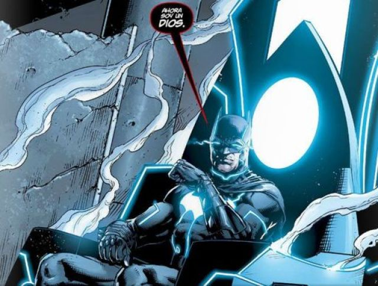

Curriculum vitae de Bruce Wayne
Datos personales
- Nombre Completo: Bruce Wayne
- Fecha de nacimiento: 19/02/1939
- Lugar de nacimiento: Gotham City
Formación Académica
- 1956-1961: La Corte de Los Buhos
- 1952-1956: Liga de asesinos
- 1944-1952: Silla Mobius
Experiencia Laboral
- 1975-1985: Salvador del Universo
- 1965.1975: Dios del conocimiento
- 1962-1965: Superhéroe